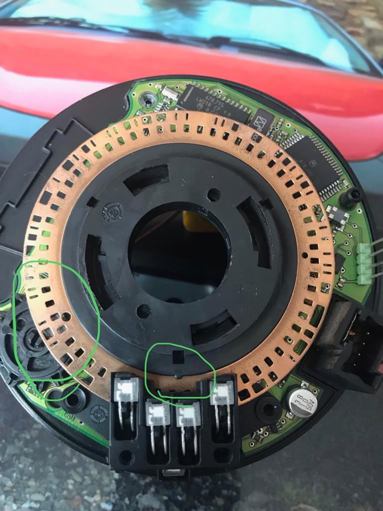

Alineación del sensor de giro#
(by Josep)
Para sacar el volante ponlo completamente centrado para que el tornillo del volante bloquee el sensor del esp, al moverlo un diente y ponerlo otra vez, no lo entres completamente, como ahora estará un poco torcido, tienes que ponerlo recto para que encajen las pestañas del esp en el soporte.
Sacando los cuatro tornillos torx T-9 llegamos al mecanismo
Veréis que tiene una rueda codificada con agujeros color bronce, intentad no tocarla con los dedos.
Si os fijáis, tiene una pequeña muesca o flecha en el eje central y aparte de los agujeros cuadrados y rectangulares tiene dos agujeros redondos
Además tiene una pequeña ruleta, marcada en la foto, que tiene una parte metalizada
Cuando está centrada está parte metalizada queda escondida detrás de la rueda de bronce
En la parte inferior tal como lo vemos tiene cuatro sensores que detectan el movimiento de esta rueda y la dirección.
{kind=link}
Como el volante da más de una vuelta en cada sentido, cuando hace una vuelta completa en el sentido del reloj, tal como la estamos viendo, se mueve la ruleta y vemos aparecer la parte metalizada fuera de la rueda codificada.
Si damos otra vuelta girará un poco más la ruleta y saldrá toda la parte metalizada como se puede ver.
Si continuamos girando dará algo más de media vuelta y notaremos una pequeña resistencia al giro, no hay que forzarlo ya que es la espiral que lleva las señales del airbag y las levas al otro lado, si se forzara podría romperse
{kind=link}
Si giramos en sentido contrario las más de dos vueltas que hemos girado y continuamos girando contra el reloj (a izquierdas), pasará lo mismo pero al revés, a la que demos una vuelta completa aparecerá la parte metalizada de la ruleta por la parte de abajo.
{kind=link}
Si damos otra vuelta, lo hará también la ruleta apareciendo completamente la parte metalizada
Si continuamos girando pasará lo mismo que antes, notaremos una pequeña resistencia al giro, igual que en el otro sentido no hay que forzarlo bajo ninguna circunstancia, se puede romper la espiral interna.

Si continuamos girando pasará lo mismo que antes, notaremos una pequeña resistencia al giro, igual que en el otro sentido no hay que forzarlo bajo ninguna circunstancia, se puede romper la espiral interna
Hay otro agujero más pequeño que queda señalando el conector.
Al volver a montar la tapa, si ponemos un trozo de cinta aislante encima, evitaremos que se mueva.
La retiramos al montarlo en el coche
Pero nos aseguramos que no se mueva mientras no lo tenemos montado
{kind=link}